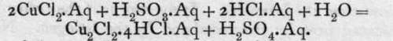
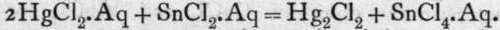
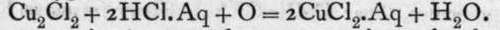
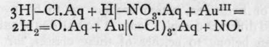

Water Of Crystallisation. Continued
Description
This section is from the book "Modern Chemistry", by William Ramsay. Also available from Amazon: Modern Chemistry: Theoretical and Modern Chemistry (Volume 2).
Water Of Crystallisation. Continued

The sulphurous acid removes oxygen from water, liberating hydrogen in presence of the cupric chloride, and the latter is deprived of half its chlorine and reduced to cuprous chloride. Similarly, stannous chloride forms a reducing agent for mercuric chloride:
The converse change can be produced by exposing the lower halide in presence of halogen acid to the action of nascent oxygen:
This oxygen in the case of copper may be molecular, O2, bat for the formation of the higher halide of mercury, it must be derived from some substance capable of parting readily with oxygen, such as nitric acid.
Cupric iodide is very unstable, and readily yields up iodine, forming cuprous iodide. On mixing cupric chloride with potassium iodide, the cuprous iodide is precipitated : 2Cu.Aq + 4-Cl.Aq + 4K.Aq 4- 4-I.Aq = Cu2=I2 + 4K.Aq + 4-Cl.Aq + I-I. It is to be noticed that the two dyad cupric ions have retained two electrons, having withdrawn them from the four iodine ions, causing iodine to be precipitated. Mercuric iodide is an insoluble scarlet precipitate, and is therefore best produced by precipitation. It dissolves, however, in a solution of potassium iodide, forming a double salt, of which more shortly.
Auric chloride contains triad gold, and thus has the formula AuCl3. It is not produced by the direct action of chlorine on gold, because the temperature of attack is above the temperature at which the compound is decomposed. But it is possible to volatilise gold in a current of chlorine, because a few molecules escape decomposition and are volatilised along the tube through which the chlorine is passed, and on cooling the gold is deposited, owing to the decomposition of the chloride at a lower temperature. It may appear paradoxical that the chloride is stable at a higher temperature than that at which it decomposes; but it is to be presumed that the difference of temperature between one favourable to an exothermic and to an endo-thermic action is very small; and as endothermic substances increase in stability on rise of temperature, the chloride is capable of volatilisation ; on cooling it becomes unstable and undergoes decomposition with deposition of gold. The usual method of preparing this salt is to dissolve gold in a mixture of nitric and hydrochloric acids. This mixture yields chlorine, which becomes ionised on receiving electrons from the metallic gold; the metal also becomes ionised, and ions of gold and chlorine pass into solution, thus:

Auric chloride forms dark red crystals; it is soluble in water, and when mixed with chlorides of the alkali metals forms a set of salts termed aurichlorides. The potassium salt, for example, has the formula KAuCl4; it is soluble in water, but, unlike the " double salts," such as MgCl2.2KCl, already alluded to, it is ionised by water, not into simple ions like these, but into the ions K and the complex group -AuCl4. At the same time there exists in the solution a small number of simple ions, so that on electrolysis gold is deposited at the kathode, but the primary effect of the current is to send the aurichloric ions to the anode.
The solution of mercuric iodide in potassium iodide, of which mention was made before, is a half-way example of the same kind. Its solution contains ions of K and -Hgl3, but these are mixed with a much larger proportion of the simple ions, K and -I and Hg and (-1)2. All grades of such salts are known ; indeed it is probable that the double salts, such as magnesium-potassium chloride, contain a small number of complex ions of -MgCl3. The ions would then be:-Mg.Aq, 2Cl-.Aq, K.Aq, Cl-.Aq, K.Aq, and MgCl3.Aq, all in a state of equilibrium with the non-ionised salts MgCl2 and KMgCl3.
These halides have been considered at length because they form types of the others. Use will be made of the examples given in treating of the remaining halides.
We have seen that the halides may undergo either ionisa-tion or hydrolysis, or both at once. The ionisation may be more or less complete, and the hydrolysis is promoted by dilution and by a high temperature. The remaining halides display both these kinds of behaviour, and according as one or the other prevails, the methods of preparing them are affected. In certain cases, moreover, the halides form compounds with other halides, usually those of the alkali metals or hydrogen, which are less apt to be hydrolysed, and yield different complex ions. The halides of carbon and nitrogen belong to neither of these classes, for they are insoluble in and unacted on by water. As neither carbon nor nitrogen is acted on by the halogens (excepting that carbon burns in fluorine), they must be prepared indirectly by acting on one of their compounds with the halogen. Methane or carbon disulphide is chosen for the former, and ammonia in preparing the latter. By passing a current of chlorine saturated with the vapour of carbon disulphide through a red-hot tube, the chlorides of both carbon and sulphur are formed: CS2 + 3C12 = CC14 + S2C12. On treatment with water the sulphur chloride is decomposed, while the chloride of carbon may be distilled off; it forms a colourless liquid boiling at 76.7°. Its smell resembles that of the closely allied chloroform, CHC13, and it is also possessed of anaesthetic properties. For the preparation of nitrogen chloride a jar of chlorine is inverted over a saturated solution of ammonia in water ; oily drops are formed which settle to the bottom of the vessel: NHg. Aq + 3C12 = NC13 +3HCl.Aq; the HC1 unites with ammonia, forming ammonium chloride.
Continue to: